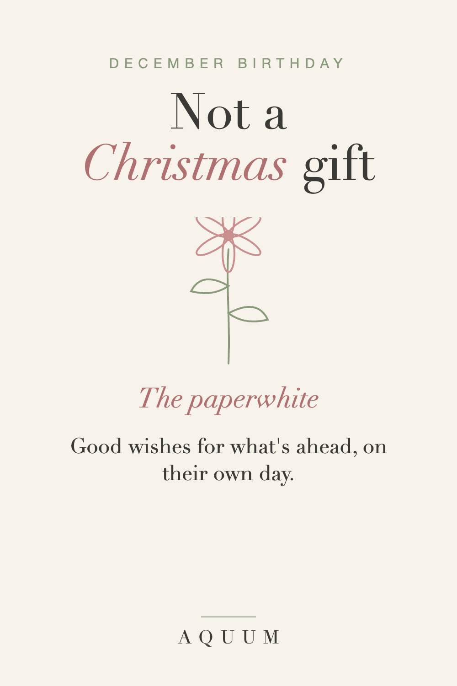

December Birthday Gift Ideas That Aren't Christmas Gifts
2026-09-30
This article may contain affiliate links. How that works.

Ask anyone born in December and they'll tell you: the birthday gets swallowed. Gifts arrive wrapped in holiday paper, labeled "for your birthday and Christmas," and the party turns into a holiday party with a cake.
The fix isn't spending more. It's making the birthday gift unmistakably a birthday gift.
Five rules for a December birthday gift
- Birthday wrapping, never holiday paper. It sounds small; it isn't.
- Give it on the day, not at the holiday gathering.
- No red and green, no snowflakes, no reindeer.
- Never "combined." Two small gifts beat one big combined one.
- Make it about them, not about the season.
Start with December's birth flower
December's birth flower is the paperwhite narcissus, and it's the easiest way to follow every rule above. It stands for renewal and good wishes for what's ahead, and unlike holly, December's other flower, it doesn't read as Christmas.
A paperwhite gift says: this one is only for your birthday.
Read the full December birth flower guide.
December birthday gift ideas
- A paperwhite shirt, mug or tote, wrapped in birthday paper.
- Paperwhite bulbs to force indoors. They bloom in four to six weeks, into January, so the birthday keeps going after the holidays end.
- A "half-birthday" plan: a small celebration in June, when nobody is busy. Put it in the card.
- An experience in January: a dinner or a trip after the holidays, when they'll actually enjoy it.
For December babies
If you're shopping for a baby born in December, a keepsake with the paperwhite and a note about its meaning is a gift the parents will keep long after the holiday decorations come down.